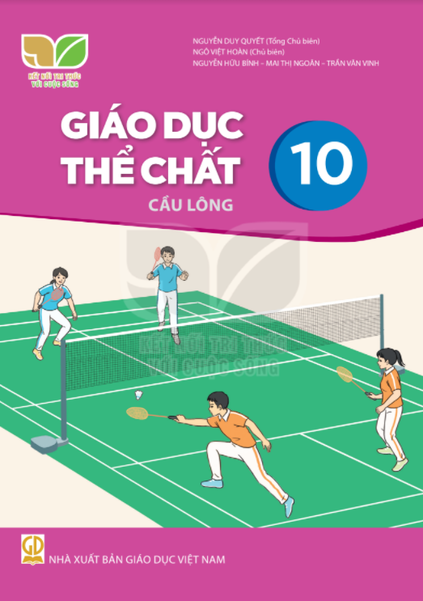
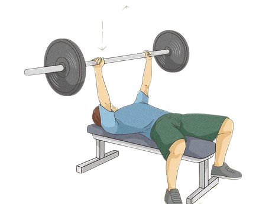

Giáo Dục Thể Chất
Bước vào lớp 10, với sự lựa chọn của mình, môn Cầu lông sẽ đồng hành cùng các bạn trong quá trình rèn luyện thân thể,phát triển các tố chất thể lực kĩ năng vận động của bản thân
Giáo dục thể chất là một môn học quan trọng trong chương trình giáo dục phổ thông ở hầu hết các quốc gia trên thế giới. Môn giáo dục thể chất đóng vai trò quan trọng trong việc giúp học sinh phát triển cả về thể chất lẫn tinh thần. Trong giai đoạn lớp 10, môn học này sẽ tập trung vào các hoạt động thể dục, vận động và rèn luyện thể lực.Một trong những mục tiêu chính của giáo dục thể chất là giúp học sinh rèn luyện thể lực và phát triển các kỹ năng vận động cơ bản. Trong lớp 10, học sinh sẽ được học các kỹ năng cơ bản như đánh cầu lông, bóng đá, bóng rổ và các môn thể thao khác. Những hoạt động này sẽ giúp học sinh rèn luyện sức khỏe, tăng cường độ dẻo dai cơ thể và cải thiện sức bền.Trong lớp 10, giáo viên giáo dục thể chất cũng sẽ giúp học sinh hiểu rõ hơn về tầm quan trọng của việc duy trì một lối sống lành mạnh và phòng tránh các bệnh lý liên quan đến sức khỏe. Họ sẽ được giải thích về các nguyên tắc cơ bản của dinh dưỡng, giấc ngủ và lối sống lành mạnh để giúp họ cải thiện sức khỏe và tăng cường thể lực.Tóm lại, giáo dục thể chất là một môn học quan trọng và cần thiết trong chương trình giáo dục phổ thông. Trong lớp 10, giáo viên giáo dục thể chất sẽ giúp học sinh rèn luyện thể lực, phát triển các kỹ năng thể thao và tăng cường sức khỏe tinh thần.



Home
Home